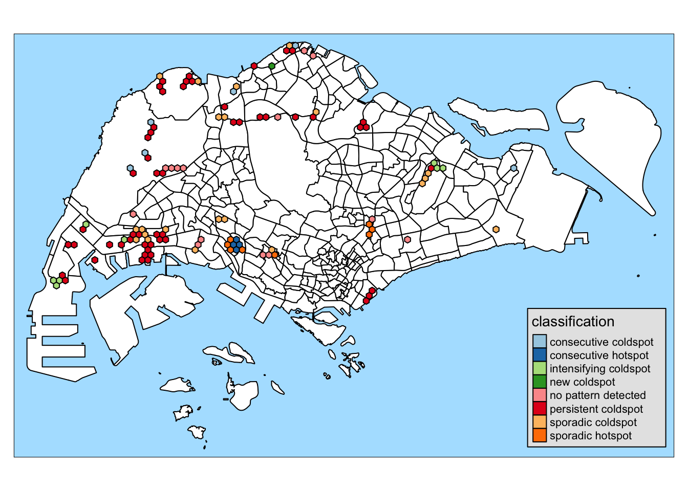

pacman::p_load(sf, sfdep, tmap, tidyverse, plotly, knitr)Take-home Exercise 1D: Spatio-temporal Analysis with EHSA
Overview
The aim of this study is to uncover spatial and spatio-temporal mobility patterns of public bus passengers in Singapore.
The main modes of analysis to be used here are Local Indicators of Spatial Association (LISA) and Emerging Hot Spot Analysis (EHSA).
In doing these study, we will be looking at bus trips started during the hours below.
| Peak hour period | Bus tap on time |
|---|---|
| Weekday morning peak | 6am to 9am |
| Weekday evening peak | 5pm to 8pm |
| Weekend/holiday morning peak | 11am to 2pm |
| Weekend/holiday evening peak | 4pm to 7pm |
More details about the study can be found here.
In this part of the study, we will do spatio-temporal analysis with EHSA using bus commuter traffic data generated from Data Wrangling. We will also attempt the answer the Open Questions from Geovisualization and Analysis:
What are the commuting patterns of people during weekdays? weekends?
Are bus trips really more spread out throughout the day during weekend?
Setup
Setting Up the R Environment
We will load the following R packages needed for this study.
tmap: for thematic mapping
sf: for geospatial data handling
tidyverse: for non-spatial data handling
sfdep: for spatial analysis
knitr:for prettifying presentation
plotly: for interactive plots
Environment settings
We will also set the default settings on for this document
tmap_styleto natural: for displaying the maps with preferred styleset seed for reproducibility of results
tmap_mode("plot")
tmap_style("natural")
set.seed(1234)Loading the data
Important
Before running this part, please run all the code chunks in Data Wrangling as it generates the data needed for this document.
Use read_rds() to load the rds data needed for geovisualization and analysis.
mpsz <- read_rds("data/rds/mpsz.rds")
honeycomb <- read_rds("data/rds/honeycomb202310.rds")
knn6_nb <- read_rds("data/rds/knn6_nb202310.rds")
trips_cube_wkdy <- read_rds("data/rds/trips_cube_wkdy202310.rds")
trips_cube_wknd <- read_rds("data/rds/trips_cube_wknd202310.rds")mpsz- Singapore boundary map for visualizationhoneycomb- honeycomb grid containing bus stops in Singaporetrips_cube_wkdy- hourly bus commuter trips data for weekdaystrips_cube_wknd- hourly bus commuter trips data for weekendknn6_nb- Nearest 6 neighbors of each hexagon. Will be used as neighbor list for EHSA
Selecting time period to study
To perform the Emerging Hot Spot Analysis (EHSA), we will select 6-hour periods that covers each of the peak periods.
Why we need to select a 6 hour period
As much as we want to do the test for the whole 24 hours, doing emerging_hotspot_analysis() is an expensive operation.
Mann-Kendall numbers are calculated based on the number of elements in the spacetime cube.
The cube has \(n_{location}\times t\) items, which is in this case 36456. Furthermore, comparing items to other items has a complexity \(O(n^2)\) of. Hence, emerging_hotspot_analysis() is an \(O(n_{location}^2t^2)\) operation.
If we compare a 24-hr period to processing a 6-hr period:
\[ n_{location}^2t_{24hr}^2 = n_{location}^2(4t_{6hr})^2 = 16n_{location}^2t_{6hr}^2 \]
Calculating the full 24-hr period can take 16x longer that doing the same operation for a 6-hour time period.
Is such, we will select 2 6-hr periods each for weekday and weekend data sets, covering the peak hours.
Inspecting the hourly trip data
To help us select the time periods to study, let us take a look a the hourly distribution of the data.
From the results below, the median trips for 1 <= HOUR_OF_DAY < 5 is 0. This means that most bus routes are not in service. So we will exclude them from the study.
kable(head(
trips_cube_wkdy %>%
group_by(HOUR_OF_DAY) %>%
summarise(
min = min(TRIPS),
median = median(TRIPS),
max = max(TRIPS)
), n = 24))| HOUR_OF_DAY | min | median | max |
|---|---|---|---|
| 0 | 0 | 27 | 12150 |
| 1 | 0 | 0 | 1450 |
| 2 | 0 | 0 | 14 |
| 3 | 0 | 0 | 0 |
| 4 | 0 | 0 | 85 |
| 5 | 0 | 99 | 31239 |
| 6 | 0 | 1126 | 77075 |
| 7 | 0 | 2343 | 134511 |
| 8 | 0 | 2157 | 124501 |
| 9 | 0 | 1371 | 61747 |
| 10 | 0 | 1091 | 42929 |
| 11 | 0 | 1162 | 45570 |
| 12 | 0 | 1322 | 60276 |
| 13 | 0 | 1214 | 70819 |
| 14 | 0 | 1010 | 70324 |
| 15 | 0 | 1170 | 72720 |
| 16 | 0 | 1591 | 90961 |
| 17 | 0 | 2488 | 129719 |
| 18 | 0 | 2359 | 184941 |
| 19 | 0 | 1420 | 147500 |
| 20 | 0 | 847 | 107809 |
| 21 | 0 | 563 | 95025 |
| 22 | 0 | 372 | 74793 |
| 23 | 0 | 164 | 41258 |
Morningpeak: 5 - 11AM, covers the peak period of 5 - 9AM
Evening peak: 3 - 9PM, covers the peak period of 5 - 8PM
kable(head(
trips_cube_wknd %>%
group_by(HOUR_OF_DAY) %>%
summarise(
min = min(TRIPS),
median = median(TRIPS),
max = max(TRIPS)
), n = 24))| HOUR_OF_DAY | min | median | max |
|---|---|---|---|
| 0 | 0 | 14 | 6101 |
| 1 | 0 | 0 | 727 |
| 2 | 0 | 0 | 0 |
| 3 | 0 | 0 | 0 |
| 4 | 0 | 0 | 22 |
| 5 | 0 | 20 | 4151 |
| 6 | 0 | 178 | 12103 |
| 7 | 0 | 344 | 20180 |
| 8 | 0 | 475 | 22296 |
| 9 | 0 | 514 | 21268 |
| 10 | 0 | 566 | 21567 |
| 11 | 0 | 584 | 23487 |
| 12 | 0 | 579 | 28469 |
| 13 | 0 | 526 | 32932 |
| 14 | 0 | 453 | 33007 |
| 15 | 0 | 454 | 32787 |
| 16 | 0 | 522 | 33743 |
| 17 | 0 | 594 | 37178 |
| 18 | 0 | 549 | 40663 |
| 19 | 0 | 437 | 40543 |
| 20 | 0 | 294 | 41284 |
| 21 | 0 | 215 | 38345 |
| 22 | 0 | 156 | 31849 |
| 23 | 0 | 79 | 19388 |
Creating spacetime cube for the peak periods
Extracting data for the peak periods
Now that we have selected the periods we are interested in, we will extract data needed for those by using filter(). We will then use these for creating the spacetime cube.
trips_cube_wkdy_am <- trips_cube_wkdy %>%
filter(HOUR_OF_DAY >= 5 &
HOUR_OF_DAY < 11)
trips_cube_wkdy_pm <- trips_cube_wkdy %>%
filter(HOUR_OF_DAY >= 15 &
HOUR_OF_DAY < 21)trips_cube_wknd_am <- trips_cube_wknd %>%
filter(HOUR_OF_DAY >= 9 &
HOUR_OF_DAY < 15)
trips_cube_wknd_pm <- trips_cube_wknd %>%
filter(HOUR_OF_DAY >= 15 &
HOUR_OF_DAY < 21)
Data clear point
We do not need trips_cube_wkdy and trips_cube_wknd anymore so we can remove them from the environment.
rm(trips_cube_wkdy)
rm(trips_cube_wknd)Building the spacetime cubes
From the extracted peak period data, we will create the spacetime cubes using spacetime. We will use HEX_ID as the time parameter, and HOUR_OF_DAY as the location parameter.
Next, the function needs a geometry to be passed along the aspatial data. We will use honeycomb for this.
Lastly, we will use is_spacetime_cube() to check the validity of the generated spacetime cube.
wkdy_am_st <- spacetime(trips_cube_wkdy_am, honeycomb,
.loc_col = "HEX_ID",
.time_col = "HOUR_OF_DAY")
is_spacetime_cube(wkdy_am_st)[1] TRUEwkdy_pm_st <- spacetime(trips_cube_wkdy_pm, honeycomb,
.loc_col = "HEX_ID",
.time_col = "HOUR_OF_DAY")
is_spacetime_cube(wkdy_pm_st)[1] TRUEwknd_am_st <- spacetime(trips_cube_wknd_am, honeycomb,
.loc_col = "HEX_ID",
.time_col = "HOUR_OF_DAY")
is_spacetime_cube(wknd_am_st)[1] TRUEwknd_pm_st <- spacetime(trips_cube_wknd_pm, honeycomb,
.loc_col = "HEX_ID",
.time_col = "HOUR_OF_DAY")
is_spacetime_cube(wknd_pm_st)[1] TRUEComputing local Gi*
Before performing the EHSA, we will need to calculate the local Gi* values first. This will help us associating hexagons to their respective neighbors, which is critical for the analysis.
Calculating inverse distance weights
In performing any geospatial analysis, we need to calculate spatial weights. We will use the neighbor list we generated from LISA analysis, which used k-near neighbors, with k=6. Inverse distance weights is used so that the association between 2 regions is stronger the closer they are.
We will use include_self() in neighbor list as we are calculating Gi* values.
idw_wkdy_am <- wkdy_am_st %>%
activate("geometry") %>%
mutate(nb = include_self(knn6_nb),
wt = st_inverse_distance(nb, geometry,
scale = 1,
alpha = 1),
.before = 1) %>%
set_nbs("nb") %>%
set_wts("wt")
kable(tail(idw_wkdy_am, n = 3))| HEX_ID | HOUR_OF_DAY | TRIPS | nb | wt |
|---|---|---|---|---|
| H1517 | 10 | 675 | 1511, 1513, 1514, 1515, 1516, 1517, 1518 | 0.0011547005, 0.0010000000, 0.0020000000, 0.0020000000, 0.0011547005, 0.0000000000, 0.0007559289 |
| H1518 | 10 | 258 | 1510, 1513, 1514, 1515, 1516, 1517, 1518 | 0.0010000000, 0.0011547005, 0.0010000000, 0.0005547002, 0.0020000000, 0.0007559289, 0.0000000000 |
| H1519 | 10 | 192 | 1498, 1500, 1501, 1505, 1506, 1512, 1519 | 0.0002096570, 0.0002309401, 0.0002073903, 0.0003049971, 0.0001970659, 0.0004364358, 0.0000000000 |
idw_wkdy_pm <- wkdy_pm_st %>%
activate("geometry") %>%
mutate(nb = include_self(knn6_nb),
wt = st_inverse_distance(nb, geometry,
scale = 1,
alpha = 1),
.before = 1) %>%
set_nbs("nb") %>%
set_wts("wt")
kable(tail(idw_wkdy_pm, n = 3))| HEX_ID | HOUR_OF_DAY | TRIPS | nb | wt |
|---|---|---|---|---|
| H1517 | 20 | 2377 | 1511, 1513, 1514, 1515, 1516, 1517, 1518 | 0.0011547005, 0.0010000000, 0.0020000000, 0.0020000000, 0.0011547005, 0.0000000000, 0.0007559289 |
| H1518 | 20 | 173 | 1510, 1513, 1514, 1515, 1516, 1517, 1518 | 0.0010000000, 0.0011547005, 0.0010000000, 0.0005547002, 0.0020000000, 0.0007559289, 0.0000000000 |
| H1519 | 20 | 167 | 1498, 1500, 1501, 1505, 1506, 1512, 1519 | 0.0002096570, 0.0002309401, 0.0002073903, 0.0003049971, 0.0001970659, 0.0004364358, 0.0000000000 |
idw_wknd_am <- wknd_am_st %>%
activate("geometry") %>%
mutate(nb = include_self(knn6_nb),
wt = st_inverse_distance(nb, geometry,
scale = 1,
alpha = 1),
.before = 1) %>%
set_nbs("nb") %>%
set_wts("wt")
kable(tail(idw_wknd_am, n = 3))| HEX_ID | HOUR_OF_DAY | TRIPS | nb | wt |
|---|---|---|---|---|
| H1517 | 14 | 293 | 1511, 1513, 1514, 1515, 1516, 1517, 1518 | 0.0011547005, 0.0010000000, 0.0020000000, 0.0020000000, 0.0011547005, 0.0000000000, 0.0007559289 |
| H1518 | 14 | 60 | 1510, 1513, 1514, 1515, 1516, 1517, 1518 | 0.0010000000, 0.0011547005, 0.0010000000, 0.0005547002, 0.0020000000, 0.0007559289, 0.0000000000 |
| H1519 | 14 | 72 | 1498, 1500, 1501, 1505, 1506, 1512, 1519 | 0.0002096570, 0.0002309401, 0.0002073903, 0.0003049971, 0.0001970659, 0.0004364358, 0.0000000000 |
idw_wknd_pm <- wknd_pm_st %>%
activate("geometry") %>%
mutate(nb = include_self(knn6_nb),
wt = st_inverse_distance(nb, geometry,
scale = 1,
alpha = 1),
.before = 1) %>%
set_nbs("nb") %>%
set_wts("wt")
kable(tail(idw_wknd_pm, n = 3))| HEX_ID | HOUR_OF_DAY | TRIPS | nb | wt |
|---|---|---|---|---|
| H1517 | 20 | 519 | 1511, 1513, 1514, 1515, 1516, 1517, 1518 | 0.0011547005, 0.0010000000, 0.0020000000, 0.0020000000, 0.0011547005, 0.0000000000, 0.0007559289 |
| H1518 | 20 | 0 | 1510, 1513, 1514, 1515, 1516, 1517, 1518 | 0.0010000000, 0.0011547005, 0.0010000000, 0.0005547002, 0.0020000000, 0.0007559289, 0.0000000000 |
| H1519 | 20 | 0 | 1498, 1500, 1501, 1505, 1506, 1512, 1519 | 0.0002096570, 0.0002309401, 0.0002073903, 0.0003049971, 0.0001970659, 0.0004364358, 0.0000000000 |
Calculating local Gi* using local_gstar_perm
As we included the hexagons themselves in their own neighbor list in Calculating inverse distance weights, we can proceed with calculating the local GI*.
gi_st_wkdy_am <- idw_wkdy_am %>%
group_by(HOUR_OF_DAY) %>%
mutate(gi_star = local_gstar_perm(
TRIPS, nb, wt)) %>%
unnest(gi_star)gi_st_wkdy_pm <- idw_wkdy_pm %>%
group_by(HOUR_OF_DAY) %>%
mutate(gi_star = local_gstar_perm(
TRIPS, nb, wt)) %>%
unnest(gi_star)gi_st_wknd_am <- idw_wknd_am %>%
group_by(HOUR_OF_DAY) %>%
mutate(gi_star = local_gstar_perm(
TRIPS, nb, wt)) %>%
unnest(gi_star)gi_st_wknd_pm <- idw_wknd_pm %>%
group_by(HOUR_OF_DAY) %>%
mutate(gi_star = local_gstar_perm(
TRIPS, nb, wt)) %>%
unnest(gi_star)Emerging Hot Spot Analysis
Running the simulations
We will now perform the Emerging Hot Spot Analysis with Monte-Carlo simulations using emerging_hotspot_analysis.
Warning: This is a relatively expensive calculation
This code chunk takes a relatively long time to run so it is set not to run with eval: false by default. We will also save it to an rds file so we do not need to recalculate the result all the time.
The file size is small, 87.9KB, so saving this file is a great way to cache the result for this expensive calculation.
Please set code chunks to run with eval: true, or manually trigger the run on Rstudio if running for the first time.
ehsa_wkdy_am <- emerging_hotspot_analysis(
x = wkdy_am_st,
.var = "TRIPS",
k = 1,
nsim = 99
)
write_rds(ehsa_wkdy_am, "data/rds/ehsa_wkdy_am202310.rds")ehsa_wkdy_pm <- emerging_hotspot_analysis(
x = wkdy_pm_st,
.var = "TRIPS",
k = 1,
nsim = 99
)
write_rds(ehsa_wkdy_pm, "data/rds/ehsa_wkdy_pm202310.rds")ehsa_wknd_am <- emerging_hotspot_analysis(
x = wknd_am_st,
.var = "TRIPS",
k = 1,
nsim = 99
)
write_rds(ehsa_wknd_am, "data/rds/ehsa_wknd_am202310.rds")ehsa_wknd_pm <- emerging_hotspot_analysis(
x = wknd_pm_st,
.var = "TRIPS",
k = 1,
nsim = 99
)
write_rds(ehsa_wknd_pm, "data/rds/ehsa_wknd_pm202310.rds")
Load point
We will reload the previously generated ehsa_wk*_* data.
ehsa_wkdy_am <- read_rds("data/rds/ehsa_wkdy_am202310.rds")
ehsa_wkdy_pm <- read_rds("data/rds/ehsa_wkdy_pm202310.rds")
ehsa_wknd_am <- read_rds("data/rds/ehsa_wknd_am202310.rds")
ehsa_wknd_pm <- read_rds("data/rds/ehsa_wknd_pm202310.rds")Visualizing EHSA
We will now visualize the results by plotting the categories for the areas where significant trends are detected.
As our \(\alpha\) is 0.05, we will be filtering the values for which the p-value < 0.05 as it is for these areas where the trends observed where significant and did not happen by chance.
Next, we will join the filtered values with honeycomb and transforming it to a sf object for it to be processed as a geospatial data.
ehsa_sig_wkdy_am <- ehsa_wkdy_am %>%
filter(p_value < 0.05) %>%
left_join(honeycomb,
by = join_by(location == HEX_ID)) %>%
st_sf()
tm_shape(mpsz) +
tm_polygons(col = "white") +
tm_shape(ehsa_sig_wkdy_am) +
tm_polygons("classification", palette = "Paired")